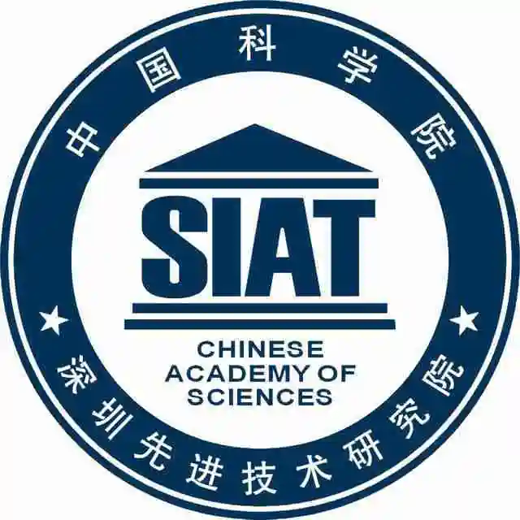

Research Experiences
-
PolyU NLP Group, The Hong Kong Polytechnic University, Hong Kong, China.
Postdoctoral Fellow, 2024 - 2026
Supervisor: Prof. Maggie Wenjie Li -
SLED Research Lab, University of Michigan, Ann Arbor, USA.
Visiting PhD, 2024 (Spring & Summer)
Supervisor: Prof. Joyce Chai
-
PolyU NLP Group, The Hong Kong Polytechnic University, Hong Kong, China.
Research Assistant, 2020 - 2021
Supervisor: Prof. Maggie Wenjie Li -
SIAT-NLP Group, SIAT, Chinese Academy of Sciences, Shenzhen, China.
Visiting Graduate Student, 2018 - 2019
Supervisor: Prof. Min Yang